5. Current Architecture
In Building Our Behavior Architecture, we told the story of building our system and went over the components in some detail. In this chapter, we’ll cover the current structure again to round off the full current design.
Our central design choice is to enable the robot to be autonomous but utilize human expert knowledge to set up the autonomous behavior. We do this by including a human operator in the loop through tight synchronization between a user interface and the robot. Once behaviors are set up sufficiently, our architecture, which keeps all perception and control on board the robot, allows the robot to function autonomously.
5.1. Domain
There are many perspectives from which to view our system. Figure 5.1 summarizes the primary components by domain: Behavior Coordination, Perception, and Whole-Body Control. This highlights that our system is built separately from depth and semantic perception and from whole body control. Our work sits firmly in the top-left area and describes how it interfaces with the others. The behavior executor owns the behavior tree and a behavior-specific scene. The operator UI owns the behavior editor, 3D digital robot twin, and system monitoring.
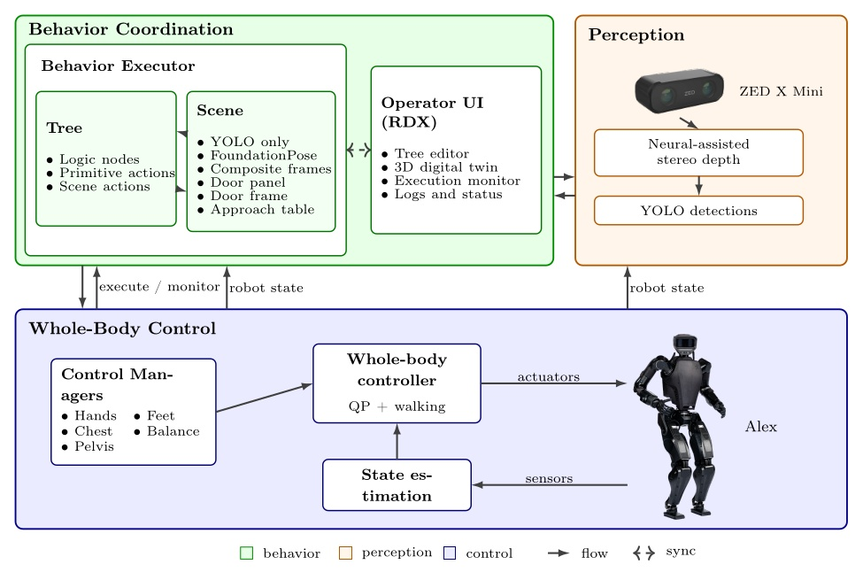
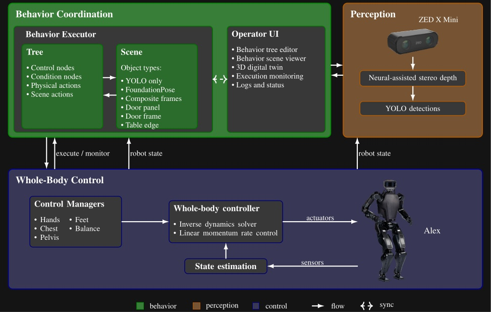
We use a ZED X Mini [25], which is a purely stereo color vision depth sensor, mirroring that of a human. It provides a high-fidelity, neural-assisted depth point cloud. A key dependency of the behavior system is YOLO [43], which is a neural net that provides high-frequency semantic object detection and segmentation. It is crucial to our door behaviors and loco-manipulation behaviors, which perceive the world naturally, with no external sensing or fiducial markers.
The other key dependency is a whole body controller that can reliably walk, pose, and exert meaningful forces on the world. Ours is set up uniquely to accept asynchronous commands for footsteps and the different body parts, triaging the requests into whole body motions while balancing [35].
5.2. Process Structure
In Figure 5.2 we show another view of the system, where the parts are grouped by process and location. This is meant to illustrate that the behavior system and perception run on board the robot in a process alongside the whole-body controller, whereas the operator UI is on a separate computer. This structure is designed to tightly integrate the perception, behavior, and control stack on the robot for performance and for autonomous capability. This enables high-rate color, depth, and scene data to stay local. The operator UI inspects, edits, pauses, single-steps, and triggers autonomous execution but does not own task progression.
The decoupling of the user interface and the on-robot stack matters operationally. If the UI crashes or communications degrade, the runtime keeps the state needed to continue the current task or stop in a controlled way according to its authored logic. It also matters during development. The operator can reconnect, inspect the same execution, and resume working without reconstructing behavior state from an external script or a lost UI session. The split also isolates responsibilities cleanly: autonomy and perception focus on decision-making and scene state, control focuses on real-time balance, walking, and hardware I/O, and the operator process can be rich and inspectable without sitting in the critical execution path.
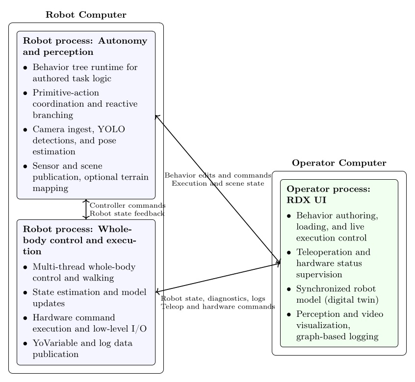
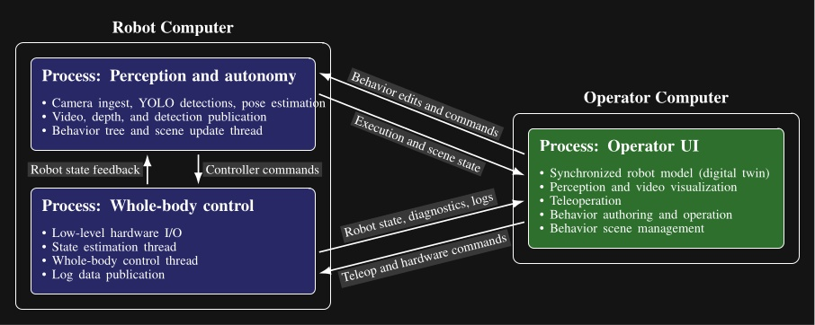
5.3. Node Structure
Each behavior tree node is decomposed into four parts as shown in Figure 5.3: a robot-side executor, an operator-side UI, a synchronized runtime state, and a persisted definition. The persisted definition stores authored content (name, notes, parameters, children). The runtime state instantiates the definition and adds runtime information (node identity, active status, recent log messages). The UI and execution implementations wrap the state and definition layers, allowing the separation by process while sharing synchronized runtime state and authored structure. Operator interaction, on-robot execution, synchronized state, and definition are each isolated in separate code files.
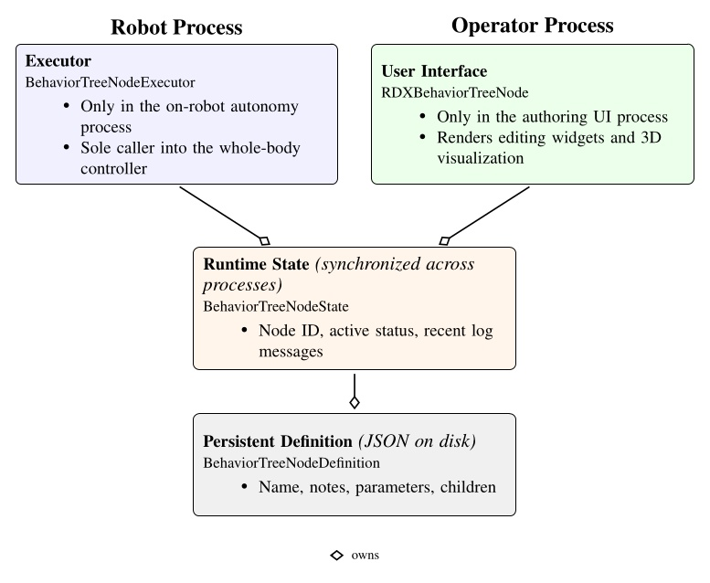
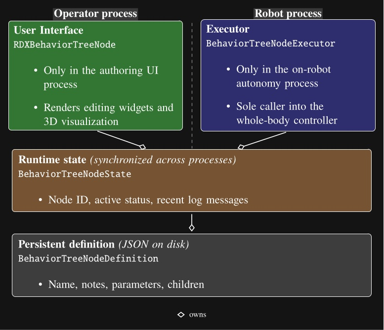
5.4. Robot-Operator Data Synchronization
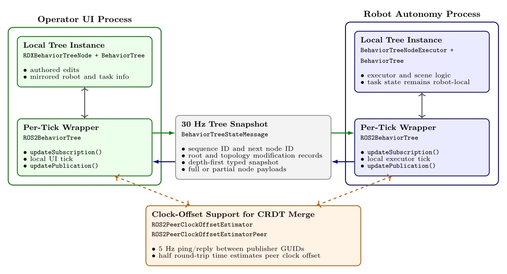
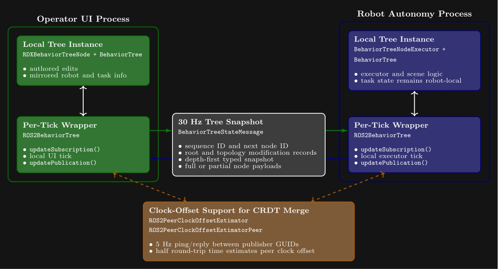
The cost of our process structure is that it necessitates a complex synchronization mechanism between the robot and the operator to facilitate rich runtime editability. We looked to the literature to find algorithms to synchronize our data, where we found Conflict-Free Replicated Data Types (CRDTs) [89]. We decided to embrace the concept and formulate our behavior tree and scene state as a CRDT and synchronize it at 30 Hz, as shown in Figure 5.4.
We use the ROS 2 DDS middleware to transmit the synchronization messages. Its autodiscovery feature streamlines the connections between operator UIs and robots. The robot and the operator are allowed to concurrently edit data types such as footstep goal poses, which may be moved by the robot to update their pose with respect to the parent frame while the operator may wish to modify the definition of those goal poses. We use a latest-timestamp algorithm to resolve potential conflicts. The latest modification to a data field persists. A clock-offset estimator, shown at the bottom of Figure 5.4, supports this design by providing a means for comparing data modification times.
The operator interface and the robot-side behavior system thread symmetrically synchronize on each tick. At the start of each tick, the wrappers apply any received data updates. After the UI or executor performs its local work, it republishes the current tree and increments an update number that is used to maintain order.
The serializer packs the tree in depth-first order using a node type table and per-type message arrays. To save bandwidth, each node is sent as a compact partial-data payload unless a full type-specific payload is needed. Full data are sent when the node definition has changed, when a peer has requested retransmission, or when the node reports fresh status. The compact version carries only the generic state and CRDT metadata. This mechanism is summarized in Figure 5.4.
Topology is synchronized separately from per-node content. The tree root reference, whole-tree metadata including the next available node ID, and each node’s child list each carry their own modification metadata. On receipt, the subscriber reconstructs an intermediate message tree, matches nodes by ID, and applies topology operations only where the incoming root or child-list modification is newer. A topology change queue is used to apply all topology changes at once, later, to ensure tree consistency. New nodes are replicated locally through the node builder, moved or reordered nodes are reattached through the topology queue, and nodes that disappear from the incoming tree are destroyed. If a process comes online late or a dropped message leaves only partial data available, the receiver flags the node as needing full data and the peer resends the full payload on a later publication.
Some node fields, such as execution status and visualization data, are unidirectional and only modifiable by one actor. Examples include leaf execution information such as “is next for execution”, “can execute”, “is executing”, and “has failed”, which are owned by the robot side. These are mirrored to the other side without arbitration.
Other fields are concurrently modifiable by all actors, which we refer to as bidirectional fields. Examples include the root node’s “automatic execution” gate, “next execution index” selection, manual-step requests, “enable concurrency”, preview mode, and “reset failures”.
The bidirectional CRDT fields use a last-modified record that stores author identity, a monotonic modification number, and a timestamp. A local write records the writer GUID, modification number, and timestamp. On receipt, a newer modification number wins immediately. Equal-number races are resolved by comparing timestamps after transforming the peer timestamp into the local clock frame using a peer clock-offset estimator. This estimator derives the time offset from ROS 2 ping-reply messages under a symmetric-delay assumption.
5.5. Persistence Storage of Behaviors
To enable authored structure to be saved, loaded, copied, and versioned, we support saving to and loading from JSON files.
The saved JSON represents the definition layer from Figure 5.3.
It contains names, notes, parameter values, child hierarchy, and node type specifics.
Each node is serialized with a type field and a children array that mirrors the behavior tree.
Figure 5.5 shows a condensed excerpt illustrating nested arm and walk action definitions.
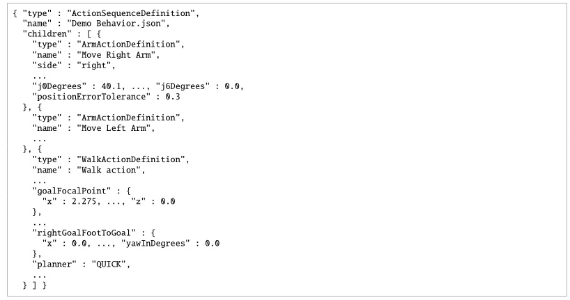
type, parameters, and nested children.
Ellipses mark omitted sibling nodes and fields.We have tried to make these files readable by humans, but they are not intended to be edited. For example, instead of saving a number with unnecessarily high precision (i.e. “0.1349159123”), we round it (i.e. “0.135”). We also use degrees instead of radians because it’s easier to reason about. Still, we recommend viewing behaviors in the operator interface for the best understanding. A step-by-step tutorial example is given in Section 6.3.17.
5.6. Whole-Body Controller
The behavior coordination layer interfaces with a whole-body and walking controller that executes arbitrary trajectory requests and footsteps. The behavior runtime sends requests to the controller and monitors execution through status messages.
We use the whole-body momentum-based control framework developed by Koolen et al. [35]. The general structure and control flow of the whole-body controller and walking implementation are illustrated in Figure 5.6 and Figure 5.7. It is a model-based torque-control scheme centered on a quadratic program (QP) that reconciles weighted motion-task objectives on the generalized joint-acceleration vector, with QP constraints for dynamic feasibility, foot-ground contact, and force-limited grasping. The action primitives use joint-space and spatial task-space objectives provided by this controller.
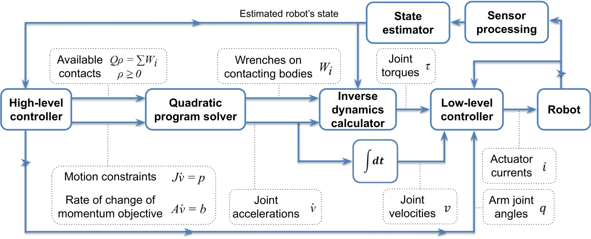
The QP [35] solves for the desired generalized joint-acceleration vector and basis-vector multiplier , minimizing weighted momentum and spatial motion-task errors subject to the equations of motion and contact friction:
where is centroidal momentum and is its rate of change, is the desired momentum-rate error, , , and are cost-function weighting matrices, is a Jacobian that maps generalized joint accelerations to spatial accelerations, is the convective term, is the desired spatial acceleration, is the wrench from gravity, is the ground-reaction wrench, and is an external wrench. The resulting ground reaction, pre-specified wrenches, and desired joint accelerations are used as input to an inverse-dynamics solver to compute the desired joint torques .
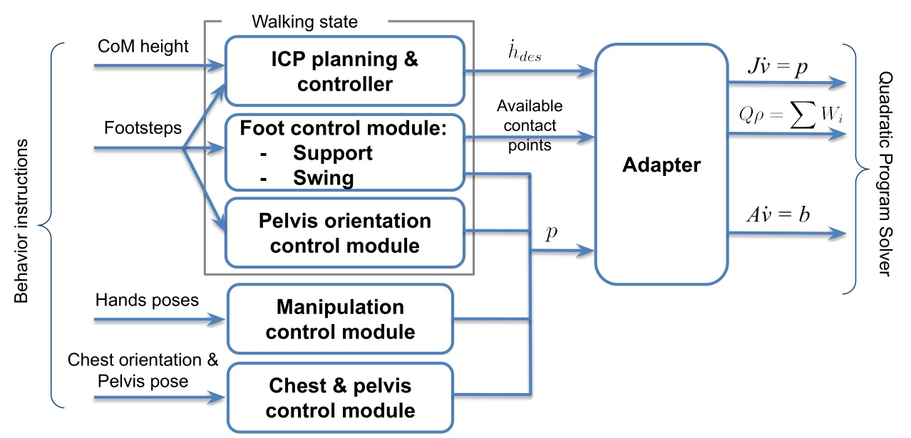
We use the dynamic walking behavior described in [35], composed of standing, transfer, and swing states with associated motion tasks and active contacts. The controller executes a queue of footstep poses submitted by the behavior layer and uses instantaneous capture point (ICP) [46] to model balance dynamics. Foot pose, pelvis height, and pelvis orientation trajectories are generated to achieve the desired footsteps while maintaining balance. During transfer, an ICP trajectory is generated and heel lift is triggered by selectively enabling heel contact points as the stance foot pitches toward toe-off. The centroidal moment pivot (CMP) can also be used to regulate angular momentum during balance control. More details can be found in [45].
Foot swings use smoothed trajectories that vary by terrain type. On rough terrain, swings may be planned to avoid tripping; on flat ground, default conservative trajectories with low swing height are used. To recover from external disturbances and instabilities, swings can also be sped up during execution to more quickly catch balance. State estimation combines kinematic foot-ground-contact proprioception for pelvis position and velocity with a pelvis-mounted IMU for pelvis orientation. When a foot is in contact (determined by a glitch-filtered virtual foot switch), we assume it does not slide, and pelvis position and velocity are estimated by fusing leg kinematics with IMU acceleration data. The positional estimate is therefore susceptible to drift from inaccurate foot-contact detection, foot slipping, and lack of both feet on the ground.
5.7. Operator Interface
Our operator interface is based on a robotics software sandbox called Robot Data eXplorer (RDX), as introduced in Building Our Behavior Architecture. Hands-on examples of how RDX is used to create and modify behaviors using our system are covered in Usage Guide. RDX provides dockable panels of widgets, an interactive 3D scene, overlays, toolbars, and persisted layout and configuration handling. Its primary third-party libraries are Dear ImGui, libGDX, and OpenVR [65], [66], [67], and the same framework treats virtual reality as a core visualization and interaction mode rather than a separate tool. This single UI framework covers behavior authoring, digital-twin visualization, perception debugging, graph-based logging, and direct teleoperation modes such as whole-body streaming, footstep placement, and joystick walking. The operator tooling co-evolved with the runtime and shares the same data structures, so authoring, execution, and diagnosis all operate over a common substrate.
See Usage Guide for extensive coverage of operator interface features.
5.8. Object-Centric Action Definition
In our system, many of our physical actions can be defined in the coordinate frame of a part of the robot or a scene object. This includes hand poses, footsteps, spine action, the screw primitive axes, and the neck action. When approaching objects like tables and doors, the footsteps are defined with respect to the perceived object frame or door frame. When grasping an object, the pre-grasp hand poses are defined with respect to the perceived object. This important architectural design element is inspired by both the IHMC DARPA Robotics Challenge user interface presented in Section 4.1 and the Affordance Template Framework [20], [22] discussed in Section 3.1.1.
This is also referred to as “object-centric” action, which is acting with respect to the object, versus “ego-centric” action, which is acting with respect to the robot. Object-centric action definition is actually essential and core to the reusability of behaviors. It serves two main purposes. The first is to enable varied starting conditions of the robot. For example, task approach should be specified with respect to the task. The other is to reduce compounding errors. Ego-centric actions in sequence are subject to state estimator drift and other control errors.
If you played back a door traversal behavior fully ego-centrically, assuming the robot started at the same initial pose as during authoring, it would likely miss the handle grasp or run into the door panel or frame. As an example of why, the door traversal approach stance may not achieve the desired footsteps accurately due to bad balance and recovery during the final steps. This would result in a stance that is slightly different than planned. If it were to then try to grasp the handle with respect to that stance (self) instead of the handle, even though it may have worked before, it will likely not work this time. The pre-grasp hand pose would be misaligned. Instead, by using the actively perceived or re-perceived door handle pose to define the pre-grasp action, the grasp should succeed, overcoming the prior error using the inverse kinematics solver to achieve the correct pose.
Object-centric action definition is a way of doing sequential composition in the sense proposed by [59]. The example above may be viewed as Lyapunov funnels, where task approach is funnel A. The opening of funnel A is the space of possible starting locations of the robot. Funnel B is the handle grasp action. The size and shape of the opening of funnel B would represent the tolerance to different robot stance locations. It would be mainly based on arm reachability from the various stances. In this way, you could say that object-centric actions are a way to achieve task stability given a system with accruing errors.
This is implemented using the Euclid math library [91], which provides a reference frame tree with world frame as the root and the robot and all scene objects as subtrees and leaves. Euclid makes it easy to create new reference frames and calculate transformations between any two frames in the tree.
We show how to define a hand pose with respect to a perceived object in Section 6.6.7.
5.9. Behavior Tree Structure
Our behaviors are structured as a tree of nodes. The tree organization serves a dual-purpose. It allows for organization of behavior and also a way to author logic in a simple way.
We reuse the concept of a filesystem in computing for behaviors. Robot behaviors can be abstracted across many layers. Useful tasks for robot work are defined as completable goals which usually consist of higher level abstractions like “sort the objects into containers” or “deliver this package to room 40”. These high level task specifications ultimately need to be triaged to a sequence of low-level primitive actions. High level task specifications live towards the root of the tree and low level primitive actions live as the leaves.
Our system is not a Behavior Tree as in the literature [60] (we will use capitalized Behavior Tree to reference the literature version). It is rather a tree of behavior implemented in a way we found most useful. However, we do adopt Behavior Trees’ concepts of sequence, fallback, condition, and action nodes. Figure 5.8 summarizes the main structural elements.
Our runtime updates all nodes on each tick and does not reduce control flow to a fixed set of return types such as “success,” “failure,” and “running.” The node library is freer in how it represents and exposes execution state, and the model stays closer to how we actually authored and debugged humanoid door traversals, where action overlap, retries, manual stepping, and scene-state inspection mattered more than adherence to a standard BT interface.
In our implementation, the whole tree is one big sequence. The order of the sequence is the depth-first ordering of the leaves. Algorithm 6 outlines the basic sequence algorithm.
A unique part of our architecture, which diverges even further from Behavior Trees, is that we keep a next execution index. This is in contrast to restarting at the root node on each tick. In this way, we are more like a state machine. The next execution index is a pointer to the next node to execute, which can be changed by the operator, the sequence executor, a goto node, or a fallback node.
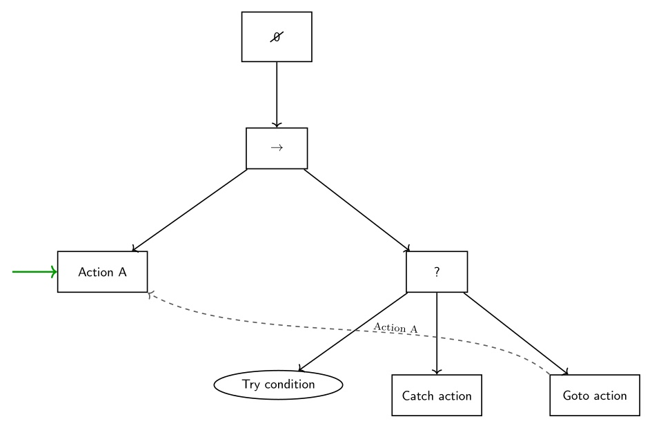
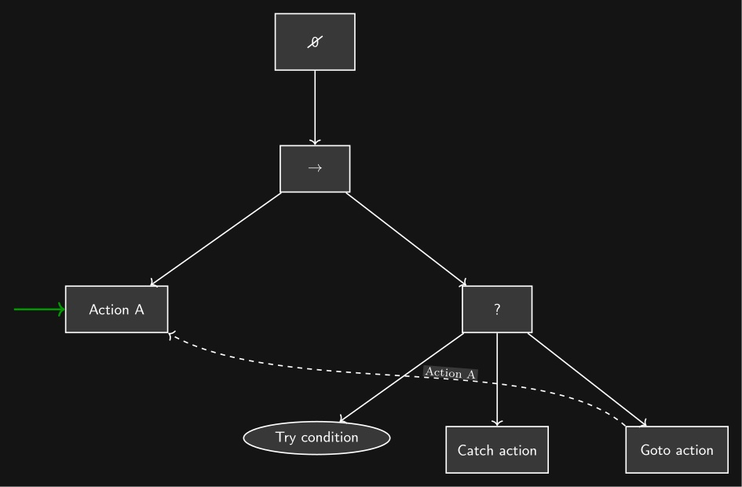
We also have a unique implementation of a fallback node, which is not a list of steps to try, but rather one thing to try and a sequence as a catch. We cover the fallback node in detail in Section 6.8.
The tree view in the operator interface is closer to a hierarchical file browser than to a dense 2D graph editor. That choice matched the rest of the operator workflow because the behavior view had to coexist with a 3D scene, first-person sensor imagery, scene-object panels, robot-status panels, and teleoperation widgets.
In summary, our implementation is neither a Behavior Tree, a state machine, nor a hierarchical state machine. Instead, it combines elements from each to suit the needs of a runtime-editable behavior authoring system.
5.10. Generalized Door Traversal Behavior
As an example, Figure 5.9 abstracts the authored structure of door/DoorTraversal.json and the expanded right-pull subtree in door/RightPullDoor.json.
The top-level file handles the general approach, constructs the panel-, frame-, and hybrid-frame scene objects used for door-specific execution, and dispatches to left-push, left-pull, right-push, and right-pull branches.
The right-pull branch is expanded because it makes the authored strategy clear: state-specific approach nodes feed a detailed lever-turn and door-opening sequence with explicit fallback loops before the final traversal.
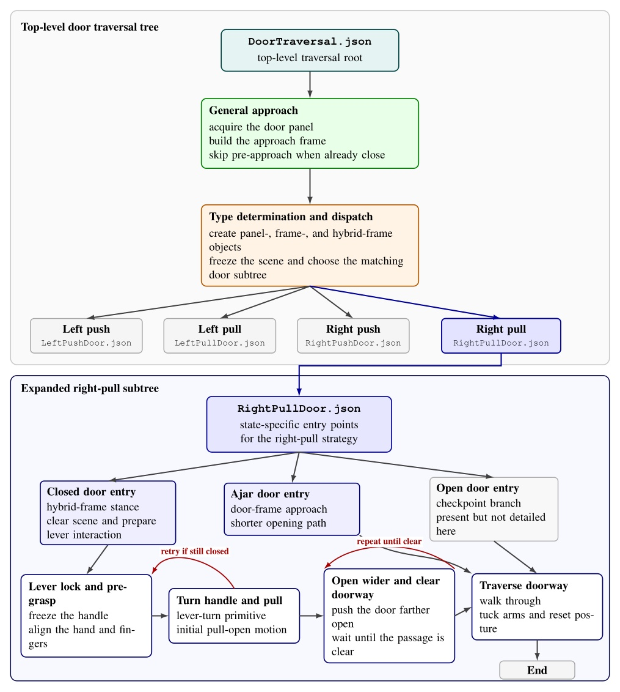
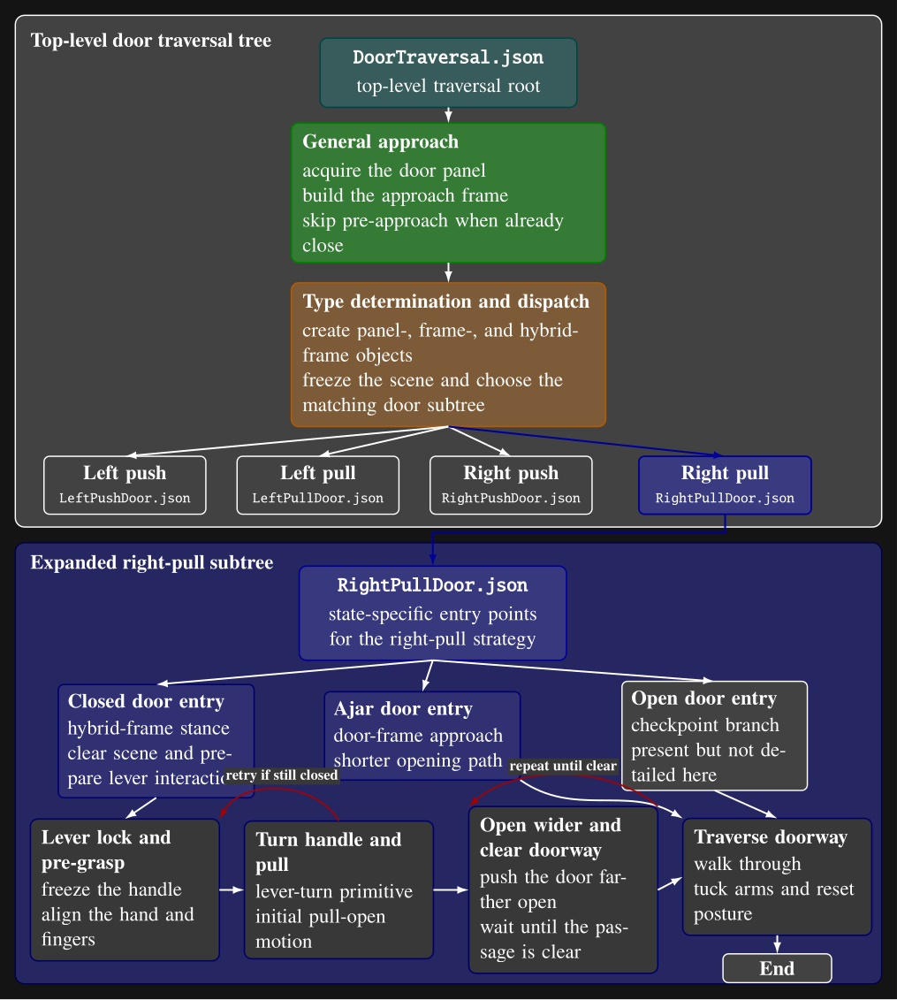
door/DoorTraversal.json: a general approach phase is followed by door-type determination and dispatch to one of four door-specific subtree files.
The lower portion expands door/RightPullDoor.json, showing its closed-, ajar-, and open-door entry points and the detailed closed-door path through lever acquisition, handle turning, door opening, fallback retries, doorway-clear checks, and traversal.
Intermediate action nodes are grouped into phase-level blocks for readability.5.11. Node Library
A full list of our node types is shown in Figure 5.10. The functionalities of these nodes are covered in detail in Usage Guide.
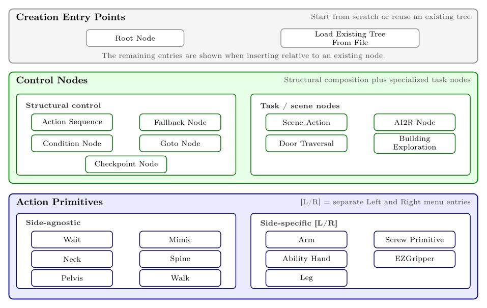
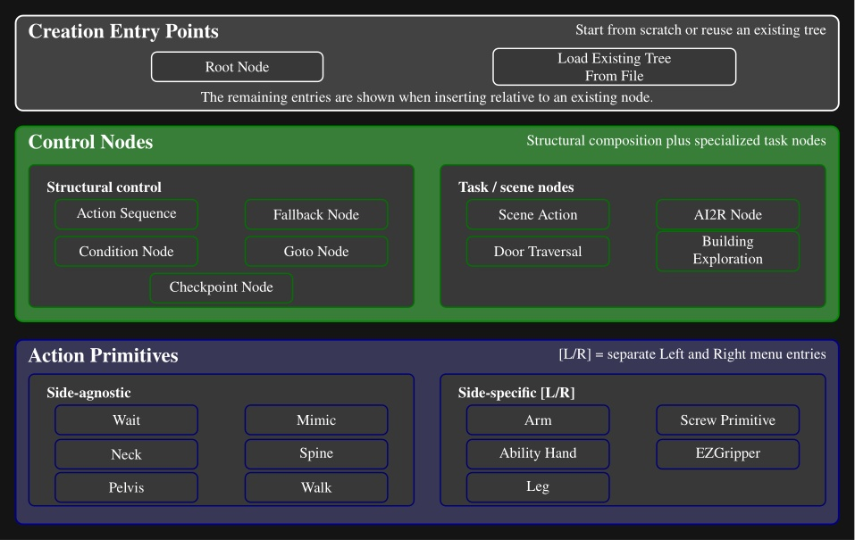
Here is a description of all node types:
-
Action Sequence. Sequential backbone of a behavior. Groups child leaves into a named routine without adding execution logic beyond standard tree traversal.
-
Fallback. Splits child leaves into a primary try path and a recovery path. If the try path succeeds, recovery leaves are skipped; if it fails, execution jumps to the first catch leaf.
-
Condition. Tests that gate or redirect execution without commanding motion. Counters, frame-to-frame proximity checks, shape containment checks, and explicit success or failure cases.
-
Goto. Redirects execution to the next leaf or to a named target leaf elsewhere in the tree. Completes immediately, making retries, skips, and nonlocal jumps authorable at runtime.
-
Checkpoint. Instantaneous named landmarks. Provides stable entry points, progress markers, and jump targets for external triggers or goto-based control flow.
-
Scene Action. Manipulates behavior-time scene state rather than robot joints. Creates, refreshes, freezes, or deletes scene objects, clears the scene, or reconfigures detection and perception models.
-
Mimic Action. Replays a recorded policy trajectory or requests a transition out of policy control. Replay is aligned to the robot’s current mid-feet pose so the same recording can be reused from different starts.
-
AI2R. Connects the tree to an external reasoning module through command and status topics. Publishes available behaviors, scene state, and failures, and can randomize repeated goto actions for data collection.
-
Door Traversal. Domain-specific wrapper that inspects detected door geometry to choose the correct authored branch (closed versus ajar, push versus pull) and manages logging around specific walking segments.
-
Building Exploration. Structural hook for larger-scale exploration behaviors, with little node-specific runtime logic beyond standard tree update.
-
Neck Action. Commands head yaw and pitch over an authored duration for directing perception or the operator’s viewpoint.
-
Spine Action. Commands the torso by explicit spine joint angles or by an authored chest pose relative to a frame. Tracks joint or orientation error and can keep the torso pose anchored after completion.
-
Walk Action. Main locomotion primitive. Executes manually placed footsteps or planner-generated routes from waypoints and goal frames, with preview planning and runtime progress tracking.
-
Arm Action. Commands one arm using predefined joint targets or a hand palm pose relative to an authored frame. Solves IK, sends jointspace and/or taskspace commands, and monitors pose or joint error.
-
Screw Primitive Action. Expresses hand motion as translation and rotation along a screw axis attached to an object frame, useful for constrained interactions such as turning or sliding. Builds a smooth trajectory while enforcing velocity limits.
-
Pelvis Action. Adjusts body pose with an authored pelvis frame and duration to reshape reachability or stance.
-
Ability Hand Action. Commands the six-actuator Ability Hand using grip presets or explicit joint targets and velocities. Completion uses waiting, per-joint tolerance, or cumulative motion, and the node can wiggle the hand if a grasp stalls.
-
EZ Gripper Action. Commands the Sake gripper to a target opening with a grip-force limit. Checks calibration and aperture, then tracks knuckle motion until the requested configuration is reached.
-
Wait Action. Timed pause synchronized to robot time, useful for settling and for spacing controller requests.
-
Leg Action. Commands a single foot pose relative to an authored parent frame for direct swing-foot placement outside the full footstep planning pipeline.
5.12. Behavior Scene
The last major architectural component of our system is the behavior scene. We maintain a set of persistent object detections local to the behaviors and for use only by the behaviors. This exclusivity allows behaviors to have full control over the perception they depend on. This is also important given the technical limitations of robot perception systems.
Since leveraging perception to accomplish tasks is difficult, we leave the creativity up to the human operator. To do this, we have a library of scene actions which may be placed in the behavior tree and executed in the same way as the physical actions like moving a hand. Figure 5.11 shows where the scene actions affect the behavior scene perception pipeline. It also lists the current set of object and scene action types.
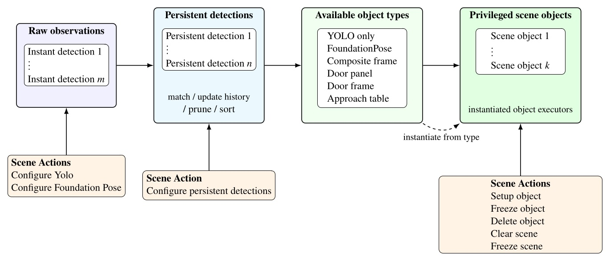
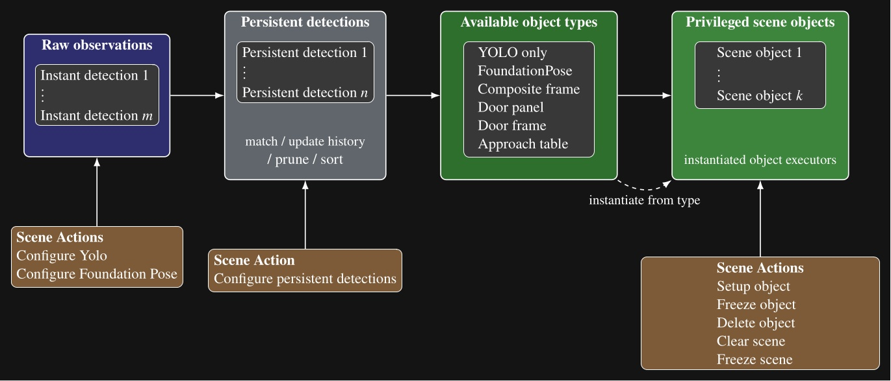
Our scene object types, listed in Figure 5.11, include directly detected object types, such as YOLO-only and FoundationPose objects, but also derived types that compute new frames from persistent detections, existing scene objects, or depth data. These specialized scene object types are a demonstration of how advanced perception and world modeling can be incorporated into our behavior system to extend capability to novel tasks. In the next several sections, we will describe these derived types.
5.13. Door Panel Object
Our door panel object is a derived scene object built from two stable YOLO persistent detections: one for the opening mechanism and one for the door panel. A setup object type scene action can be set up to create a door panel object after those detections have passed the usual stability and proximity checks. An example is shown in Figure 4.60.
The object executor draws a line between the mechanism centroid and the panel centroid and uses that direction to define panel orientation. This exploits the assumption that door panels swing on a vertical hinge. The resulting frame is centered on the mechanism and establishes the mechanism side and the panel interior direction. Figure 5.12 summarizes the computation and the resulting top-down frame convention. Subsequent actions can then use this frame for grasp, unlatch, and opening motions.
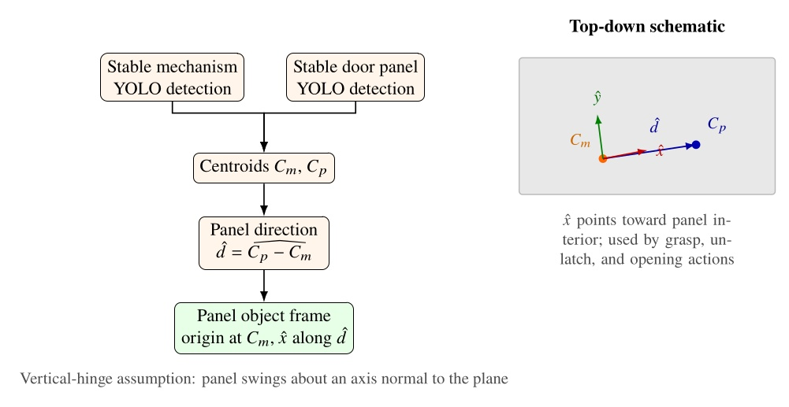
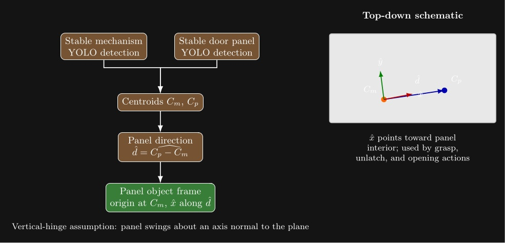
5.14. Door Frame Object
The door frame object extends the door panel object with semantic door geometry estimated from the live depth image. A door frame setup object type scene action requires an existing door panel object to be established in the scene. It then derives the door frame pose, push or pull type, and door open angle from that panel state and the current point cloud.
The estimator places a nominal hinge location at a fixed offset from the mechanism along the panel width. Figure 5.13 illustrates our algorithm, which sweeps a vertical 3D capsule around a frame existence hypothesis in the point cloud and, at each candidate angle, uses a CUDA points-in-shape counter to search for the latch-side frame post. As soon as a tunable sufficient number of points are detected within the capsule, that angle is used to define the door frame plane. Hinge side is inferred from the panel frame relative to the robot viewpoint. When the panel is clearly open, the sign of the opening angle relative to the hinge side determines push or pull side. When the door is closed, we use a second vertical capsule depth point check to detect the presence of a door panel recess, which indicates a push door when the recess is present and a pull door when it is not, as illustrated in Figure 5.14. Figure 5.15 shows the estimator across closed, ajar, and widely open doors, both hinge configurations, push and pull, and a backside view of the panel.
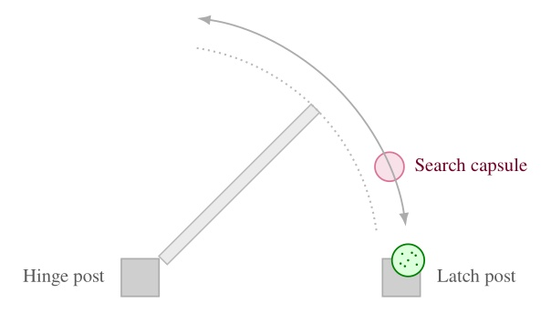
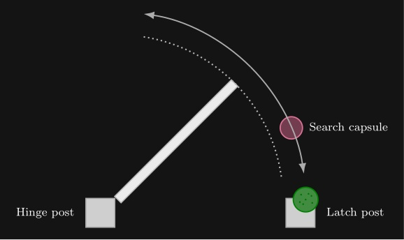
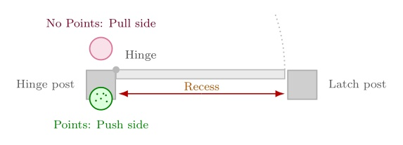
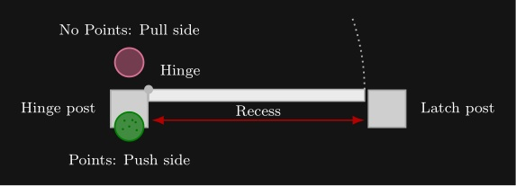
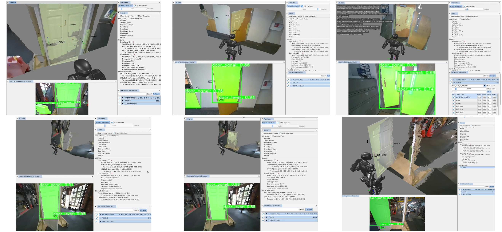
5.15. Composite and Hybrid Frames
A composite frame is a perception-less object derived from two existing scene frames. The reason for this is to perform geometric calculations to provide more useful reference frames. Like other privileged objects, it is created by a setup-object scene action and can be referenced by walk, arm, spine, and other physical actions in the same way as a detected object frame. Figure 4.73 shows a representative door setup sequence: clear scene, setup door panel, setup door frame, and setup hybrid frame, with the resulting privileged objects visible in the scene panel.
There are currently two composite frame subtypes: an approach frame and a hybrid frame. Both are parameterized by two source frames by name. The approach frame orients its axis to face from frame A toward frame B and places its origin on the line segment between them at a tunable distance from frame B. This makes it suitable for walking toward a task while stopping short of collision with the object being approached. A hybrid frame takes its position from frame A and its orientation from frame B. It is useful for approaching an ajar door panel, where the robot should walk with the orientation of the door frame but approach the position of the opening mechanism.
Composite frames can be layered. For example, an ajar-door hybrid frame can serve as one input to a subsequent approach frame that defines a distant handle approach stance. The top-level door traversal behavior in Figure 5.9 constructs panel, frame, and hybrid-frame objects in this way before selecting a door specific subtree.
5.16. Approach Table Object
The approach table object applies the same scene object pattern outside the door domain. It is a heuristic derived object that does not rely on semantic detections. Instead, it operates directly on the live depth image to produce a reusable table edge approach frame. This is a novel algorithm that we have demonstrated to allow humanoid robots to approach tables with centimeter accuracy. This is important because it enables the robot to get close enough to enable arm reachability on the table’s workspace without colliding with the table.
The algorithm is as follows. Two vertical capsules, one on each side of the robot, sweep forward from the pelvis in the mid-feet-under-pelvis frame at a height where table edges are expected. The capsules start near knee height and end just below chest height so that tables of different heights can be handled with one parameterization. Our CUDA point counter measures depth point containment inside each capsule at every step. Each side continues sweeping until enough points are found or the search limit is reached. Once both sides have located the edge, the approach frame is computed from the left and right detection points and . Let denote the ground-plane positions of the left and right capsule centers in the mid-feet-under-pelvis frame after each sweep finds enough table points. In this frame, points to the robot’s left, so the left capsule is placed at and the right capsule at . The edge origin and orientation are
where points along the table edge toward the robot’s left and is the in-plane perpendicular chosen to point into the table. In three dimensions, the translation uses with set to the current mid-feet height, and the rotation aligns to , , and world-up . This enables tracking the table edge regardless of the table height. Figure 5.16 summarizes the overhead search geometry.
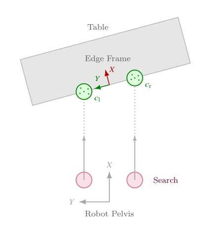
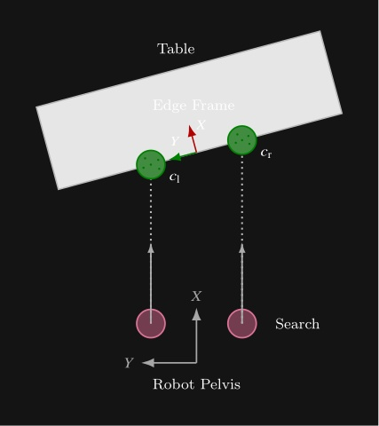
The point threshold and search limits are editable in the scene-action settings. Subsequent walk actions use the resulting frame to square up to the table edge before manipulation. This feature supports multi-station sorting, ball return, and other loco-manipulation tasks where the robot must approach a work surface reliably before reaching for objects on it. Figure 5.17 shows the detected capsules, the generated approach frame, and a footstep plan authored relative to that frame.


In the next chapter, we’ll dive into the specific functionalities of all these architectural features with a hands-on guide to creating and modifying behaviors using our system.
References cited on this page
[20] S. Hart, P. Dinh, and K. A. Hambuchen, “Affordance templates for shared robot control,” in AAAI fall symposium on artificial intelligence and human-robot interaction, Arlington, VA, USA: AAAI, Nov. 2014. Available: https://ntrs.nasa.gov/citations/20140012413
[22] S. Hart, P. Dinh, and K. A. Hambuchen, “The affordance template ROS package for robot task programming,” in Proceedings of the IEEE international conference on robotics and automation (ICRA), 2015, pp. 6227–6234. doi: 10.1109/ICRA.2015.7140073.
[25] StereoLabs, “ZED x mini stereo camera | stereolabs.” 2024. Available: https://www.stereolabs.com/store/products/zed-x-mini-stereo-camera
[35] T. Koolen et al., “Design of a momentum-based control framework and application to the humanoid robot atlas,” International Journal of Humanoid Robotics, vol. 13, no. 1, p. 1650007, 2016.
[43] J. Redmon, S. Divvala, R. Girshick, and A. Farhadi, “You only look once: Unified, real-time object detection,” Proceedings of the IEEE conference on computer vision and pattern recognition, pp. 779–788, 2016.
[45] J. E. Pratt, S. Bertrand, and T. Koolen, “Stepping for balance maintenance including push-recovery,” in Humanoid robotics: A reference, A. Goswami and P. Vadakkepat, Eds., Dordrecht: Springer Netherlands, 2019, pp. 1419–1466. doi: 10.1007/978-94-007-6046-2_41.
[46] J. Pratt, J. Carff, S. Drakunov, and A. Goswami, “Capture point: A step toward humanoid push recovery,” in 2006 6th IEEE-RAS international conference on humanoid robots, 2006, pp. 200–207. doi: 10.1109/ICHR.2006.321385.
[59] R. R. Burridge, A. A. Rizzi, and D. E. Koditschek, “Sequential composition of dynamically dexterous robot behaviors,” The International Journal of Robotics Research, vol. 18, no. 6, pp. 534–555, 1999, doi: 10.1177/02783649922066385.
[60] M. Colledanchise and P. “Ogren, Behavior trees in robotics and AI: An introduction. CRC Press, Taylor; Francis Group, 2018. doi: 10.1201/9780429489105.
[65] O. Cornut, “Dear ImGui.” 2024. Available: https://www.dearimgui.com/
[66] libGDX Community, “libGDX.” 2024. Available: https://libgdx.com
[67] Valve Software, “OpenVR.” 2024. Available: https://github.com/ValveSoftware/openvr
[89] M. Shapiro, N. Preguiça, C. Baquero, and M. Zawirski, “Conflict-free replicated data types,” in Proceedings of the 13th international symposium on stabilization, safety, and security of distributed systems (SSS 2011), in Lecture notes in computer science, vol. 6976. Springer, 2011, pp. 386–400. doi: 10.1007/978-3-642-24550-3_29.
[91] S. Bertrand and I. Robotics, Euclid: Vector math and geometry library. (2026). Available: https://github.com/ihmcrobotics/euclid